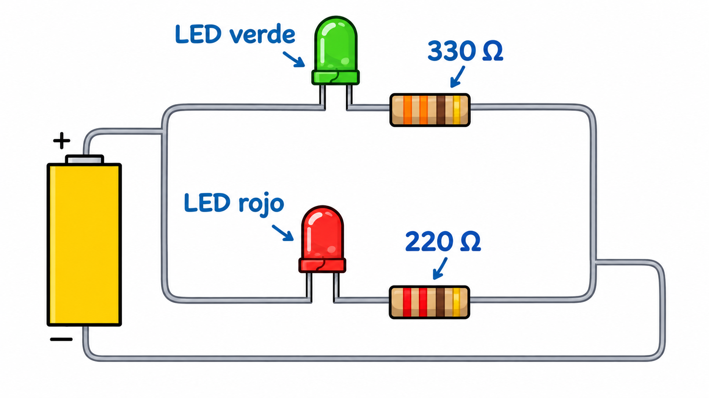
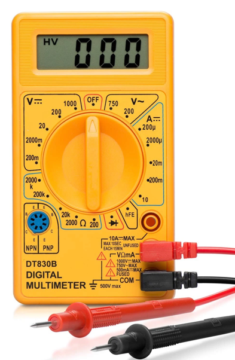
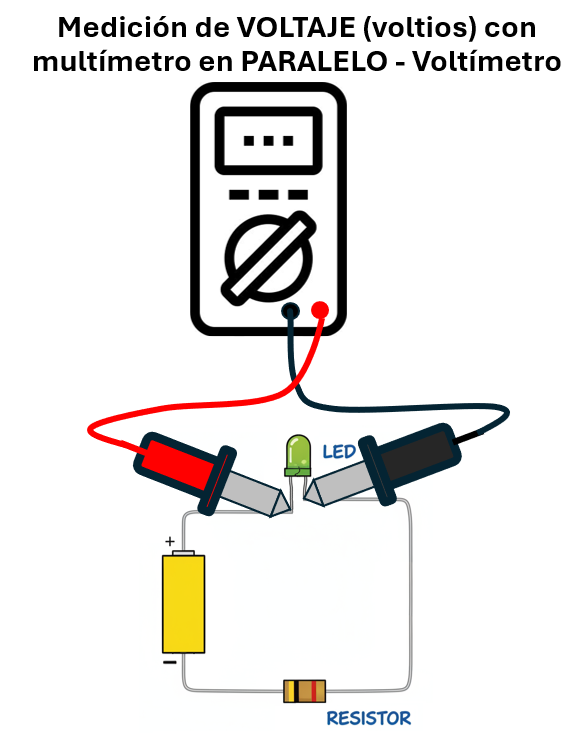
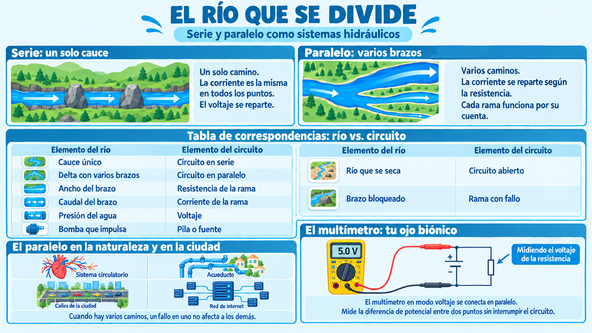

Imagina un río que corre por un valle estrecho. Toda el agua que nace en la montaña debe pasar por ese único cauce. Si algo lo bloquea, el agua se detiene. Si dos afluentes llegan al mismo cauce, se unen y siguen juntos.
Ese es el modelo del circuito en serie. Toda la corriente fluye por el mismo camino. Los componentes se conectan uno tras otro, como los tramos de un río. Y si uno se rompe, todo el río se detiene.
💡 Idea clave: en serie, la corriente es la misma en todos los puntos. No se pierde ni se reparte. Es un solo río, con un solo caudal.
Ahora imagina el delta de un río: cuando el agua llega al mar, se abre en varios brazos. Cada brazo tiene su propio caudal. Si uno se seca, los otros siguen fluyendo. El agua total que llega al mar es la suma de todos los brazos.
Ese es el modelo del circuito en paralelo. La corriente se divide en varias ramas. Cada rama funciona por su cuenta. Si una falla, las otras siguen. Y el agua total es la suma de todos los caudales.

🔎 Comparación hidráulica:
No todos los brazos del delta llevan la misma cantidad de agua. Los brazos más anchos y profundos llevan más caudal; los más estrechos llevan menos. La naturaleza reparte el agua según la "facilidad" de cada camino.
En un circuito en paralelo pasa exactamente lo mismo: la corriente se reparte entre las ramas según su resistencia. La rama con menos resistencia (el "brazo ancho") lleva más corriente; la rama con más resistencia (el "brazo estrecho") lleva menos.
💡 La analogía es directa: un brazo más ancho ofrece menos resistencia al agua, y por eso lleva más caudal. En el circuito, una rama con menos resistencia lleva más corriente. Y como en el río, el flujo prefiere el camino más fácil.
El paralelo no es exclusivo de la electricidad. Muchos sistemas naturales y humanos funcionan con múltiples caminos. Aquí algunos ejemplos.
Esta tabla te permite traducir cualquier elemento del río a su equivalente eléctrico:
| Elemento del río | Elemento del circuito |
|---|---|
| Cauce único | Circuito en serie |
| Delta con varios brazos | Circuito en paralelo |
| Ancho del brazo | Resistencia de la rama |
| Caudal del brazo | Corriente de la rama |
| Presión del agua | Voltaje |
| Bomba que impulsa | Pila o fuente |
| Río que se seca | Circuito abierto |
| Brazo bloqueado | Rama con fallo |
El corazón bombea sangre a través de la aorta, una arteria gruesa que sale del corazón. Pero la aorta se ramifica: primero en arterias medianas, luego en arteriolas, y finalmente en millones de capilares. Cada capilar lleva sangre a una parte distinta del cuerpo.
Si el sistema fuera en serie, la sangre tendría que pasar por todos los capilares uno tras otro, y un bloqueo en cualquiera detendría toda la circulación. Como es en paralelo, un bloqueo en un capilar solo afecta a esa pequeña zona. El resto del cuerpo sigue recibiendo sangre.
Es el mismo principio que usamos hoy en la instalación eléctrica: varios caminos, más robustez.
Cuando el agua sale de la planta de tratamiento, no va por una sola tubería gigante que pasa por todas las casas. Se ramifica en paralelo por barrios, manzanas y edificios. Si una tubería se rompe en un barrio, los demás siguen recibiendo agua. Si el sistema fuera en serie, un daño en una casa dejaría sin agua a toda la ciudad. Y como en la electricidad, cada casa tiene su propia "rama".
Si hay una sola avenida, todos los carros deben pasar por ella. Un accidente la bloquea, y nadie puede avanzar. Pero si hay varias calles paralelas, los carros se reparten. Un accidente en una calle no detiene a toda la ciudad.
Cuando envías un mensaje por internet, los datos no viajan por un solo cable. Se dividen en paquetes que toman rutas distintas. Si un cable falla, los paquetes llegan por otro camino. Es el paralelo llevado al extremo.
💡 Lo que tienen en común: todos estos sistemas usan varios caminos para repartir la carga y resistir fallos. El paralelo es una estrategia natural para hacer sistemas más robustos.
Vas a construir dos circuitos y medir con el multímetro los voltajes, para comprobar con datos la diferencia entre serie y paralelo. El objetivo no es solo armar los circuitos, sino entender qué está pasando por dentro.
💡 Dos formas de hacer este taller: puedes hacerlo en el aula (con el kit del colegio y un multímetro) o llevarlo a casa si tienes acceso a los materiales. Tu docente te dirá cuál elegir.
Antes de medir, predice qué esperas encontrar. Anota tus respuestas en tu bitácora:
Para este taller vas a usar un instrumento que mide magnitudes eléctricas: el multímetro. Es tu "ojo biónico" para ver lo que los electrones hacen por dentro del circuito.
En este taller solo vas a usar una función del multímetro: la medición de voltaje DC (V=).

⚠️ Regla de oro antes de medir: verifica dos veces que la punta roja esté en el puerto VΩmA (no en el 10A) y que la perilla esté en el rango correcto. Un error de puerto puede dañar el multímetro.

💡 Cómo medir voltaje:
⚠️ La confusión más común: muchos piensan que la forma de conectar las puntas cambia según lo que miden. No es así.
La única diferencia entre medir voltaje, resistencia o diodo no está en cómo se conectan las puntas, sino en qué función selecciona la perilla. La conexión física es la misma: las puntas abrazan al componente.
El multímetro en modo voltaje se conecta en paralelo: no interrumpe el circuito, solo "mira" la diferencia de potencial entre dos puntos. Es como poner un manómetro en una tubería: no corta el agua, solo mide su presión.
| Configuración | Voltaje LED 1 | Voltaje LED 2 | Brillo (alto/medio/bajo) |
|---|---|---|---|
| Serie | |||
| Paralelo |
Cuando termines, escribe una nota breve al final de tu hoja de registro. No es una tarea, es una reflexión. Puedes escribir sobre:
Si en serie cada LED recibe la mitad del voltaje, ¿por qué la corriente es la misma en todos los puntos? ¿Cómo se relaciona esto con el cauce único del río?
⚠️ Seguridad: trabaja siempre con 3 V, 5 V o 9 V. Nunca uses voltajes de pared (110 V o 220 V). Siempre usa resistencias de protección con los LEDs.
William Harvey (1578–1657) fue un médico inglés que revolucionó la medicina al descubrir cómo circula la sangre. Antes de él, se creía que la sangre se producía en el hígado y se consumía en los tejidos. Harvey demostró que la sangre viaja en un circuito cerrado, y que el sistema circulatorio funciona con ramas paralelas.
La aorta se ramifica en arterias, las arterias en arteriolas, y las arteriolas en millones de capilares. Si el sistema fuera en serie (una sola tubería), un bloqueo en cualquier punto detendría toda la circulación. Pero como es en paralelo, un bloqueo en un capilar solo afecta a esa zona: los demás siguen funcionando.
Harvey no sabía nada de electrones, pero su descubrimiento describe exactamente el mismo principio que usamos hoy en la instalación eléctrica de las casas. La naturaleza y la ingeniería, sin hablarlo, llegaron a la misma solución: varios caminos hacen al sistema más robusto.
La lección: la observación atenta de la naturaleza puede inspirar soluciones de ingeniería. Harvey no inventó el paralelo, lo descubrió en el cuerpo humano.
Fuentes: archivos históricos de la Royal Society y biografías de la medicina del siglo XVII.
Dale play y en 6 minutos descubrirás:
💡 Escúchenlo en familia y comenten qué sistemas de su vida diaria funcionan en paralelo.